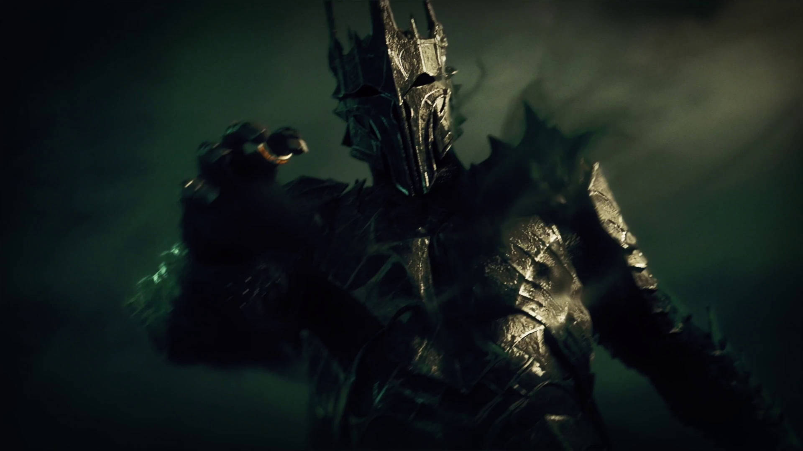

Sauron
Originalmente un ser espiritual llamado Maiar, se convirtió en el sirviente del Señor Oscuro Morgoth.
Después, creó el Anillo Único para controlar la Tierra Media. Es conocido como "El Ojo" en Mordor,
siempre vigilante y amenazador. La destrucción del Anillo es crucial para derrotarlo.
Origen
Sauron era un Maiar de Aulë, uno de los Valar, antes de ser corrompido por Morgoth.
Poderes
Sauron tiene habilidades extraordinarias en la manipulación, la hechicería y el combate.

Gandalf
Es un poderoso mago y uno de los líderes de la lucha contra Sauron. También conocido como Gandalf el
Gris
(y más tarde, el Blanco), guía y apoya a los héroes en su misión para destruir el Anillo nico.
Origen
Gandalf es un Maiar enviado por los Valar para ayudar a los pueblos de la Tierra Media.
Poderes
Gandalf posee gran sabiduría, poder en la magia y habilidades de liderazgo.

Aragorn
El heredero al trono de Gondor, conocido también como Trancos. Es un guerrero valiente y líder
carismático que desempeña un papel crucial en la batalla contra Sauron y la protección de la Tierra
Media.
Origen
Aragorn es descendiente de Isildur, el rey que originalmente tomó el Anillo nico de Sauron.
Poderes
Aragorn es un guerrero excepcional con habilidades en el combate, el rastreo y el liderazgo.
Frodo Bolsón
Un hobbit de la Comarca y el portador del Anillo nico. Su misión es llevar el Anillo a Mordor para
destruirlo y así salvar la Tierra Media.
Origen
Frodo Bolsón nació en la Comarca, una región pacífica habitada por hobbits. Es sobrino de
Bilbo
Bolsón, quien le dejó el Anillo nico.
Poderes
A pesar de su tamaño y naturaleza tranquila, Frodo demuestra un gran coraje y determinación
en su
misión.

Legolas
Un elfo del Bosque Negro y un hábil arquero. Es miembro de la Comunidad del Anillo y fiel compañero
en la
lucha contra Sauron.
Origen
Legolas es el hijo de Thranduil, el rey de los elfos del Bosque Negro.
Poderes
Legolas tiene habilidades excepcionales en el arco y la agilidad, además de una vista y oído
agudos.

Gimli
Un enano valiente y leal. También es miembro de la Comunidad del Anillo y demuestra su valor en
numerosas
batallas.
Origen
Gimli es hijo de Glóin, uno de los compañeros de Bilbo en "El Hobbit".
Poderes
Gimli es un guerrero experto con gran resistencia y habilidades en el combate con hachas.